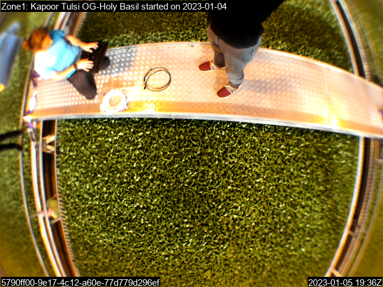
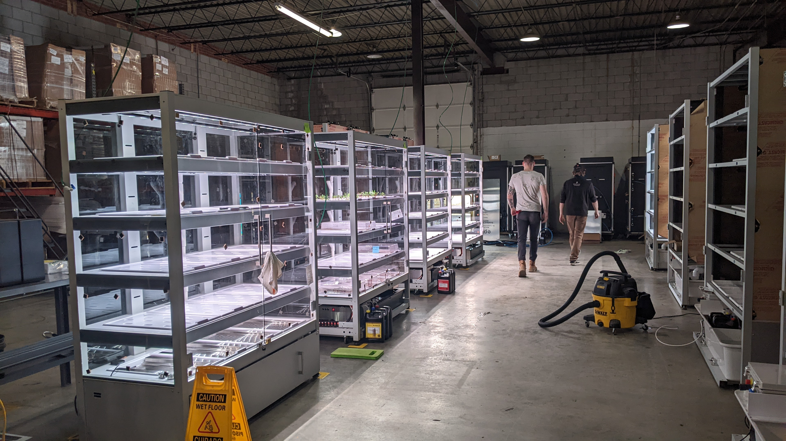

Sam Lewando dot com
by me
Professional work at Babylon Microfarms
2019-2024, Virginia, USA
I've been working at Babylon Micro-farms since Summer 2019 as a Mechanical Engineer. I've also taken on Product Management responsibilities. It's been the vast majority of my professional experience, and the company has grown and changed massively since I've been there, from 12 to 47 employees, raising over $11mm in Seed and Series A venture funding and over $2mm additionally from grant funding. In that time we've developed 4 iterations of advanced on-site hydroponic farms, and built and installed over 250 units around the world.
Key milestones and my contributions:
1. Small team, the V5 and NSF research
Spent lots of time learning about hydroponics. This was my first full time engineering job, and joining a team of 12 meant that I could immediately begin to take no projects and gain some direction in the work we were doing. Some of my first projects included retrofitting older units with upgraded dosing units, doing maintenance on those units, and helping to build out our test chamber for an NSF research grant. This test chamber involved an insulated grow chamber we had built in the office containing 12 NSF test systems and a 4 foot by 8 foot pallet rack large farm. The NSF test systems involved a 4 tier, 2 foot by 4 foot rack that had its own dosing system and electronics control.2. V6 Development & Launch
As the sole mechanical engineer on the team, I did a lot of the development work on the V6 microfarm, which ultimately led to a patent which was approved in early 2024!
You can see the details here: Patent US11930746B2

I contributed to system architecture, refining the irrigation method, and designing custom components to integrate the growing system. Figures 13, 14 and 15 are my novel designs which allowed several key features:
- Easily removable trays, whether or not the system is irrigating. This enables users to leave the farm in Autofarmer mode, the smart automated schedule.
- Easily manufacturable in a small shop with limited resources
- Modular approach, that allowed the irrigation to be made up of 20 smaller sub-trays (later to become the GrowServe system), and giving us flexibility to the overall size of the unit. This same modular approach also allowed for easily growing either individual plants, or microgreen sheets.
This design really pushed the limits of our thermoforming manufacturing partner. The basin part, for example, was formed flat, then bent twice using a line heater, allowing us to get this complex 3d shape with a single part.
This was my first foray into product management as well, where I was responsible for owning overall delivery timeline, including early production and installation of units. This enabled me to learn about true design for manufacturing and matching your product to the capabilities.
3. V6 Support

For the first 9 months of the V6 Micro-farm, we had no technicians. Instead, the engineering team performed any field service trips that needed to be done. This was a mix of proactive and reactive fixes, and often involved re-engineering entire subsystems, then rolling out a retrofit to our small fleet at the time. Looking back, this was a warmup to later efforts involving significant configuration management and field service campaigns.
4. NSF Research round 2
After moving to our new facility in Richmond with 12,000 square feet originally, before quickly expanding to the warehouse next door for a total of ~20,000 sq. ft. we had space to continue our NSF trials, in addition to production, engineering, field service and front office teams. I worked to design a new multi-farm system that would allow us to run 4 distinct trials with their own automated dosing and image capture systems. Our CTO worked with a supplier to get custom cameras that could capture single infrared images, then switch lenses and take a normal photo. Much of the actual building of this multi-farm system, which we nicknamed the quadricropter, was done by a series of multiple interns. Thank you Caroline, Colton and Emily! It was a perfect project to delegate, as the scope was fairly defined, and yet they had to work through engineering problems of multiple disciplines. As part of this research, I also designed a portable camera system with one of these custom cameras, a raspberry Pi, and a power supply so that it could run via Power-over-Ethernet (PoE). Through a partnership with a local grower, Greenswell Growers, we were able to set up our camera in their facility and begin capturing images of their lettuce troughs as they moved through the facility. Getting out of our own lab and applying this monitoring technology to a commercial growing facility was an interesting challenge and overall fun experience.
4. Galleri development and launch
Launching our second major in-house production farm was a necessity due to an end of our contract with the previous vendor. Owned the frame design, a mortise and tenon style made from laser cut anodized aluminum. I spent months in Solidworks, then much longer going back and forth with vendors to get parts in and stay under budget. I helped onboard our supply chain team, built prototypes and first production units and developed build instructions to go with them. On the build instructions, we created a system where we split the build instructions into their component parts, split the BOM, and then split the work floor along with this to make each chunk manageable and able to be controlled and learned.. Later the supply chain team worked with a lean consultant to then transform this into an almost-one-piece-flow lean production system, with stores for each of the subassemblies.
5. Galleri support, CE certification, international installs, configuration management, retrofits, RCCA.
After Galleri launched, there were significant kinks to be worked out. Knowing that issues were likely, we took this opportunity to build out a significantly more robust serial numbering and configuration management scheme. International installs: Ireland solo trip to install for SAP. First CE-certified farms with new wiring.
6. STEM Garden Development & Launch
In 2023, we began exploring concepts for a different, lower cost unit. We landed on a model intended for K-12 classroom environments. This turned into the STEM Garden. It's quite the change from the Galleri, which is designed to be a low-touch, high-tech, high-end Micro-Farm. Instead, it is much lower cost, simpler to operate but more labor intensive. It's a great learning platform for students to manually perform the farming operations, run experiments, and even tinker with programming and electronics.